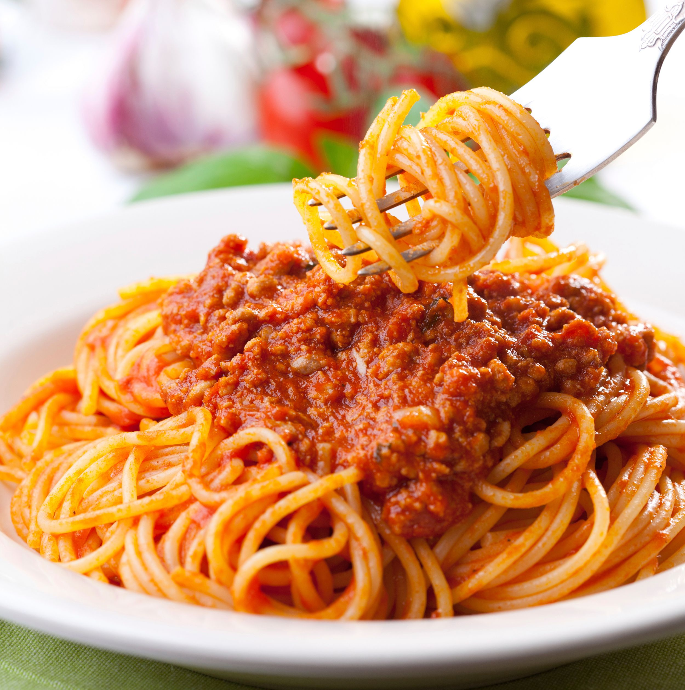

Pasta and Meat Sauce Recipe

Description:
This is a classic dish in my family. The sauce can be made completely from scratch to be authentic, but it is still very good with a store bought sauce
Ingredients:
- Linguine
- Marinara Sauce
- Ground Meat
Steps:
- Boil water and when ready, add the Linguine to the the pot
- Cook up the meat in a large sauce pan (can optionally add garlic and onions with the meat)
- When everything is cooked, add the sauce to the pan and let simmer until the pasta is ready
- When the pasta is ready, strain the water out and then add the noodles to the pan
- Stir to incorporate the noodles and the sauce
- Enjoy!